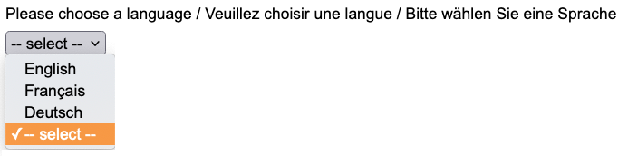

In your story form, you can provide participants with a choice of languages.
For example, a three-language story form might start like this.

When a participant chooses a language from the list, the form will redraw itself in that language.
When the participant submits the form, NarraFirma will save the participant's language choice as a question you can graph.
NarraFirma supports multi-lingual story forms using an optional translation dictionary.
For each piece of text that is to be displayed on the story form (or in the questions it references),
a translation dictionary stores alternative texts to be displayed in other languages.
This page of NarraFirma is where you can create and edit a story form's translation dictionary.
The translation facility in NarraFirma is a simple one.
It matches each translatable piece of text to one or more additional-language versions of that piece of text.
NarraFirma has no idea where these translatable texts belong on the story form.
It only knows, for example, that instead of writing "How you feel about this story?"
it should (sometimes) write "Que pensez-vous de cette histoire?"
This means that if you enter translations for a text, then change the original text (in its question or story form),
your translations of that text will become orphaned, or detached from the question or form.
They will still be stored in the question or form, but they will
never be displayed, because the original piece of text to which they are linked no longer exists.
When this happens, there is an easy fix. Choose Show orphaned translations from the drop-down list of actions, then click Do it.
Copy each of the translated texts shown, and paste it into the text box for that field's new translatable text.
To minimize the need to fix orphaned translations like this, we recommend that you design and test your story form
in its default language before you enter any translations.
Orphaned translations stay in the story form until you remove them.
To remove them, choose Remove orphaned translations, then click Do it.
The one other connection between this page and other pages in NarraFirma is that translated story forms
produce a "Language" question, the results of which you can graph in the Catalysis
section of NarraFirma.
Translation dictionaries are only used to display story forms in NarraFirma-administered surveys.
If you collected your story data outside of NarraFirma, you will have no need for a translation dictionary.
However, if you have language information from your surveying system,
you can include that information in your imported CSV file. See the
import guide for details.
If you want to export a story form from one NarraFirma project and import it into another one,
you will need to export and import the translation dictionary separately from the form itself.